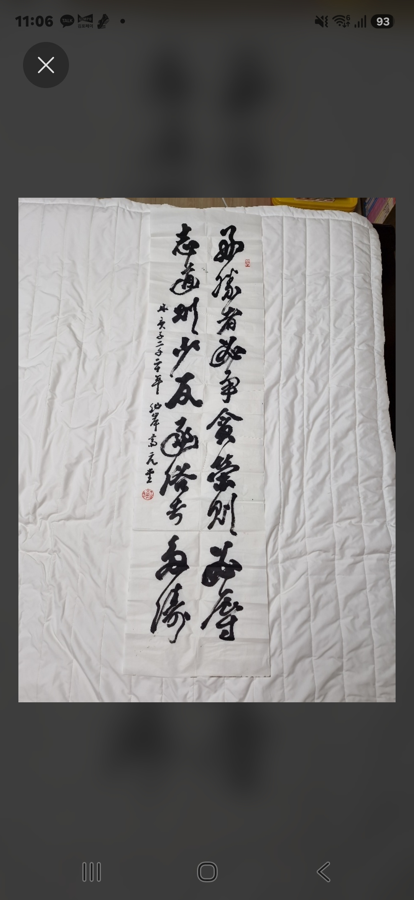

작품 상세 정보
분류: 전통 서예 작품 (작품 09 · 지본 6)
중심 구절: 少緣者必爭 貪欲則... / 志道則少惑... (소연자필쟁 탐욕칙... / 지도칙소혹...)
형식: 전통 서예 작품 (협서 및 낙관 포함)
작가: 원당 김제운
해설 및 의미
1. 본문 내용 (대자 중심)
작품은 두 줄의 세로 글씨로 구성되어 있습니다.
오른쪽 줄: 少緣者必爭 貪欲則... (소연자필쟁 탐욕칙...)
왼쪽 줄: 志道則少惑... (지도칙소혹...)
의미: 인연이 적거나 부족한 이는 다투기 쉽고, 탐욕에 사로잡히면 마음이 흐려진다는 뜻을 담고 있습니다. 반면 도(道)에 뜻을 두면 미혹됨이 적어진다는 '지도칙소혹(志道則少惑)' 등 수양과 관련된 철학적 가르침이 이어집니다.
2. 협서 및 낙관
• 왼쪽 여백: 작성 연대나 출처, 작가의 기록 등이 세로로 적혀 있으며, 하단에는 작가의 서명과 붉은색 낙관(인장)이 찍혀 있습니다.
• 오른쪽 상단: 붉은색 낙관이 함께 포함되어 있습니다.
요약 및 감상
이 작품은 욕심을 버리고 바른 도(道)에 뜻을 두어 삶의 미혹과 다툼을 멀리하고 마음을 다스려야 한다는 깊은 수양의 메시지를 힘찬 필치로 담아낸 작품입니다.